import os
import time
import numpy as np
import pandas as pd
import networkx as nx
import osmnx as ox
import matplotlib.pyplot as pltLoad libraries
Extract simplified road network of the City of London and plot.
query = 'City of London, United Kingdom'g = ox.graph_from_place(query, network_type='all_private', simplify=True, retain_all=False, truncate_by_edge=False,
which_result=None, buffer_dist=None, clean_periphery=True, custom_filter=None)ox.plot.plot_graph(g, ax=None, figsize=(8, 8), bgcolor='#111111', node_color='w', node_size=3,
node_alpha=None, node_edgecolor='none', node_zorder=1, edge_color='#999999',
edge_linewidth=1, edge_alpha=None, show=True, close=False, save=False,
filepath=None, dpi=300, bbox=None);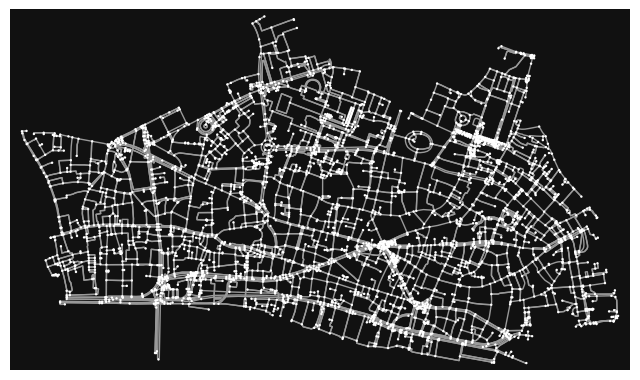
# reset multi index
nodes, edges = ox.graph_to_gdfs(g)
nodes.reset_index(inplace = True)
edges.reset_index(inplace = True)array([ 1, 2, 3, 4, 5, 6, 7, 8, 9, 10, 11, 12, 13,
14, 15, 16, 17, 18, 19, 20, 21, 22, 23, 24, 25, 26,
27, 28, 29, 30, 31, 32, 33, 34, 35, 36, 37, 38, 39,
40, 41, 42, 43, 44, 45, 46, 47, 48, 49, 50, 51, 52,
53, 54, 55, 56, 57, 58, 59, 60, 61, 62, 63, 64, 65,
66, 67, 68, 69, 70, 71, 72, 73, 74, 75, 76, 77, 78,
79, 80, 81, 82, 83, 84, 85, 86, 87, 88, 89, 90, 91,
92, 93, 94, 95, 96, 97, 98, 99, 100])Plot evolution of largest cluster size to view the percolation behaviour of the City of London.
# Plot percolation
fig, ax = plt.subplots()
#Reading data
clusters_info_filename = output_path + "/clusters_info_p.txt"
info = pd.read_csv(clusters_info_filename)
x = info['threshold_p']
y = info['LCC_size']/3994 # g.number_of_nodes() #info['LCC_size'].max()
#Plotting
import matplotlib.ticker as ticker
plt.rcParams['xtick.major.width'] = 1.2
plt.rcParams['ytick.major.width'] = 1.2
plt.rcParams['axes.linewidth'] = 1.2
rangec = np.linspace(0.2,0.95,5)
colors = [plt.cm.YlGnBu(i) for i in rangec]
ax.plot(x, y,'o-', markersize=7, color=colors[1], clip_on=True, mfc=colors[1],
mec=colors[1], lw=2, label='Size LCC')
plt.xlim([0, 100])
plt.ylim([0, 1])
ax.set_xlabel(r'Percolation threshold, $p$ (meters)', size=16)
ax.set_ylabel('Size LCC', size=16)
ax.tick_params(axis='both', which='both', labelsize=16)
xcoords = [1, 4, 10, 17, 19, 22, 27, 32, 41, 44, 45, 47, 48, 50, 53, 57, 63, 68, 74, 80]
for xc in xcoords:
plt.axvline(x=xc)
#plt.savefig("SiteBond/figs/lcc")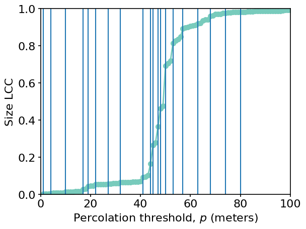
Plot percolation processes at selected thresholds.
dir_res_memb = output_path+'/membTables/'
#print(dir_res_memb)
#for p in list(reversed(ps)):
for p in xcoords:
file_name = dir_res_memb+'membership_'+'p'+str(p)+'.txt'
#print(file_name)
memb_table_file = pd.read_csv(file_name)
#memb_table_file.head()
nodes = pd.merge(nodes, memb_table_file, how='left', left_on='osmid', right_on='node_id', suffixes=(None, '_'+str(p)))
edges["up"] = [p if u in list(memb_table_file.node_id) else 'NA' for u in edges["u"]]
edges["vp"] = [p if v in list(memb_table_file.node_id) else 'NA' for v in edges["v"]]
nodes["p"] = [p if osmid in list(memb_table_file.node_id) else 'NA' for osmid in nodes["osmid"]]
fig, ax = plt.subplots()
nodes[nodes["p"]==p].plot(ax=ax, markersize=1, color='red');
edges[edges["up"]==p][edges["vp"]==p].plot(ax=ax, linewidth=1);
#plt.savefig("SiteBond/figs/lon_"+str(p), dpi=300)
plt.show();
# bond percolation... but size is with intersections instead of edges/Users/yun/Documents/portfolio/.venv/lib/python3.10/site-packages/geopandas/geodataframe.py:1428: UserWarning: Boolean Series key will be reindexed to match DataFrame index.
result = super().__getitem__(key)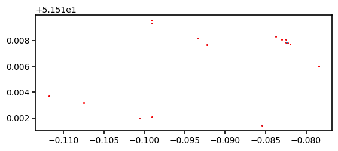
/Users/yun/Documents/portfolio/.venv/lib/python3.10/site-packages/geopandas/geodataframe.py:1428: UserWarning: Boolean Series key will be reindexed to match DataFrame index.
result = super().__getitem__(key)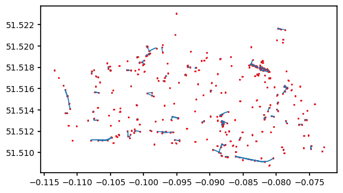
/Users/yun/Documents/portfolio/.venv/lib/python3.10/site-packages/geopandas/geodataframe.py:1428: UserWarning: Boolean Series key will be reindexed to match DataFrame index.
result = super().__getitem__(key)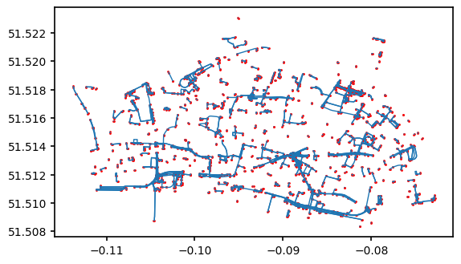
/Users/yun/Documents/portfolio/.venv/lib/python3.10/site-packages/geopandas/geodataframe.py:1428: UserWarning: Boolean Series key will be reindexed to match DataFrame index.
result = super().__getitem__(key)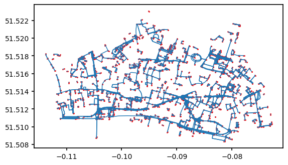
/Users/yun/Documents/portfolio/.venv/lib/python3.10/site-packages/geopandas/geodataframe.py:1428: UserWarning: Boolean Series key will be reindexed to match DataFrame index.
result = super().__getitem__(key)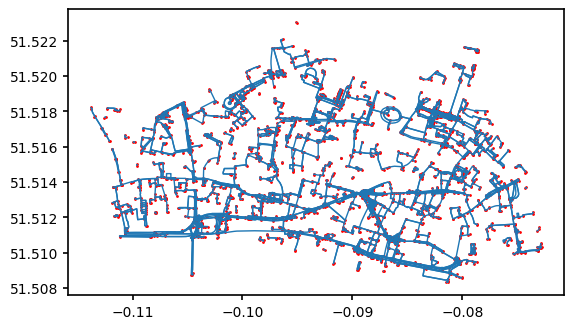
/Users/yun/Documents/portfolio/.venv/lib/python3.10/site-packages/geopandas/geodataframe.py:1428: UserWarning: Boolean Series key will be reindexed to match DataFrame index.
result = super().__getitem__(key)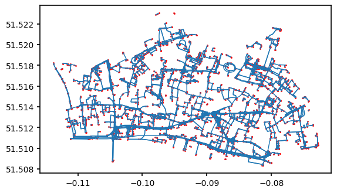
/Users/yun/Documents/portfolio/.venv/lib/python3.10/site-packages/geopandas/geodataframe.py:1428: UserWarning: Boolean Series key will be reindexed to match DataFrame index.
result = super().__getitem__(key)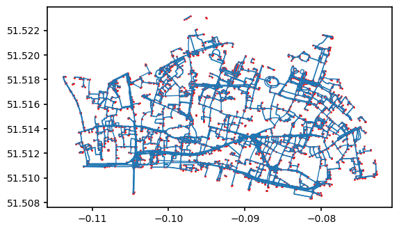
/Users/yun/Documents/portfolio/.venv/lib/python3.10/site-packages/geopandas/geodataframe.py:1428: UserWarning: Boolean Series key will be reindexed to match DataFrame index.
result = super().__getitem__(key)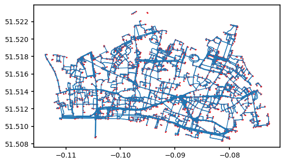
/Users/yun/Documents/portfolio/.venv/lib/python3.10/site-packages/geopandas/geodataframe.py:1428: UserWarning: Boolean Series key will be reindexed to match DataFrame index.
result = super().__getitem__(key)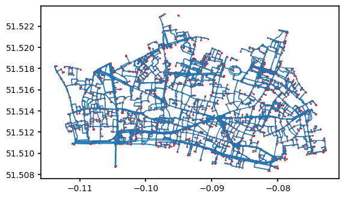
/Users/yun/Documents/portfolio/.venv/lib/python3.10/site-packages/geopandas/geodataframe.py:1428: UserWarning: Boolean Series key will be reindexed to match DataFrame index.
result = super().__getitem__(key)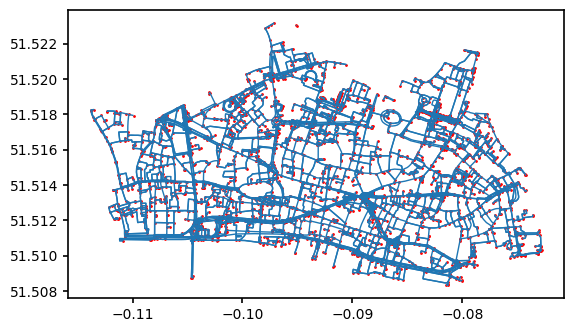
/Users/yun/Documents/portfolio/.venv/lib/python3.10/site-packages/geopandas/geodataframe.py:1428: UserWarning: Boolean Series key will be reindexed to match DataFrame index.
result = super().__getitem__(key)/Users/yun/Documents/portfolio/.venv/lib/python3.10/site-packages/geopandas/geodataframe.py:1428: UserWarning: Boolean Series key will be reindexed to match DataFrame index.
result = super().__getitem__(key)/Users/yun/Documents/portfolio/.venv/lib/python3.10/site-packages/geopandas/geodataframe.py:1428: UserWarning: Boolean Series key will be reindexed to match DataFrame index.
result = super().__getitem__(key)/Users/yun/Documents/portfolio/.venv/lib/python3.10/site-packages/geopandas/geodataframe.py:1428: UserWarning: Boolean Series key will be reindexed to match DataFrame index.
result = super().__getitem__(key)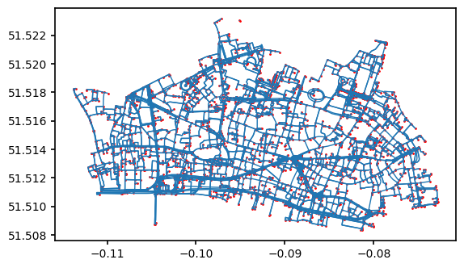
/Users/yun/Documents/portfolio/.venv/lib/python3.10/site-packages/geopandas/geodataframe.py:1428: UserWarning: Boolean Series key will be reindexed to match DataFrame index.
result = super().__getitem__(key)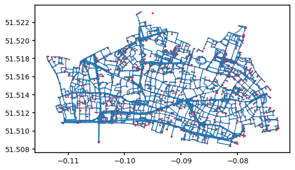
/Users/yun/Documents/portfolio/.venv/lib/python3.10/site-packages/geopandas/geodataframe.py:1428: UserWarning: Boolean Series key will be reindexed to match DataFrame index.
result = super().__getitem__(key)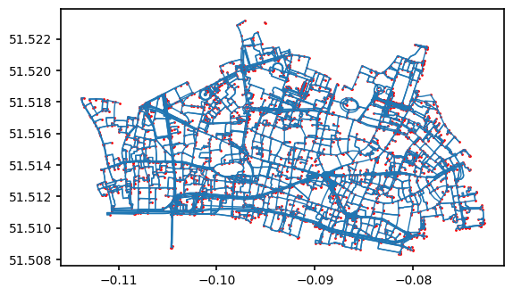
/Users/yun/Documents/portfolio/.venv/lib/python3.10/site-packages/geopandas/geodataframe.py:1428: UserWarning: Boolean Series key will be reindexed to match DataFrame index.
result = super().__getitem__(key)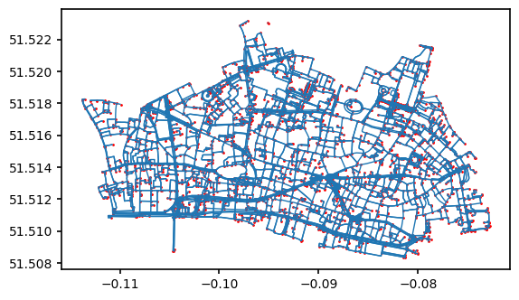
/Users/yun/Documents/portfolio/.venv/lib/python3.10/site-packages/geopandas/geodataframe.py:1428: UserWarning: Boolean Series key will be reindexed to match DataFrame index.
result = super().__getitem__(key)/Users/yun/Documents/portfolio/.venv/lib/python3.10/site-packages/geopandas/geodataframe.py:1428: UserWarning: Boolean Series key will be reindexed to match DataFrame index.
result = super().__getitem__(key)/Users/yun/Documents/portfolio/.venv/lib/python3.10/site-packages/geopandas/geodataframe.py:1428: UserWarning: Boolean Series key will be reindexed to match DataFrame index.
result = super().__getitem__(key)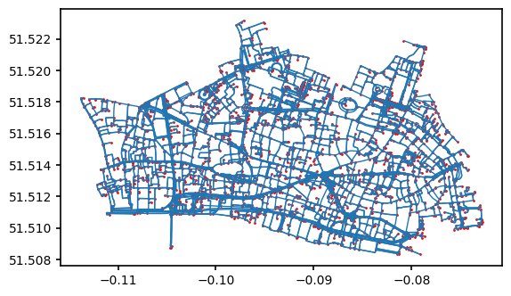